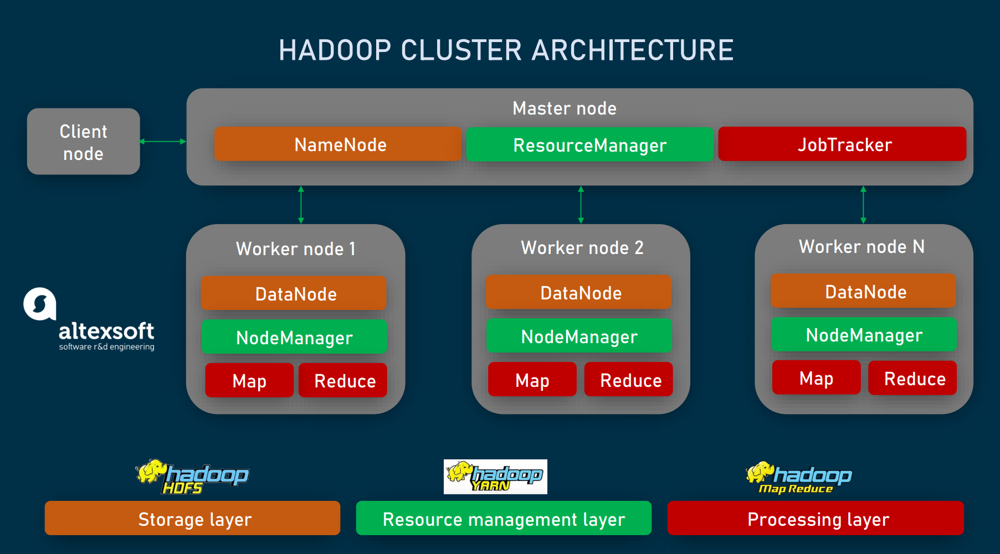
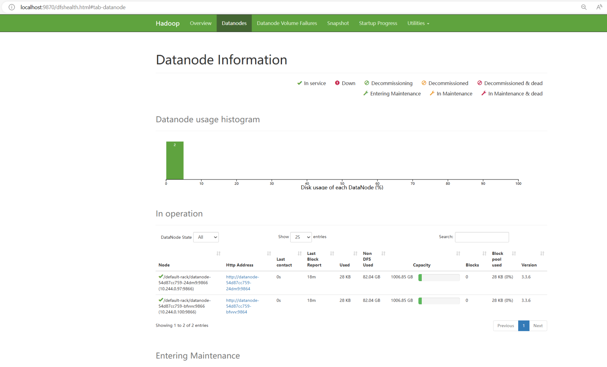
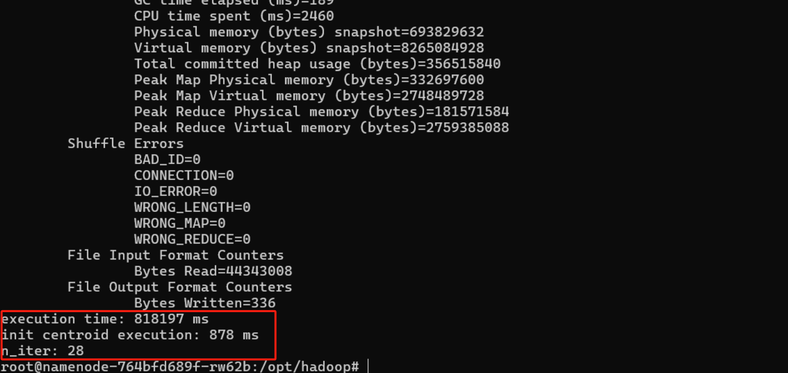
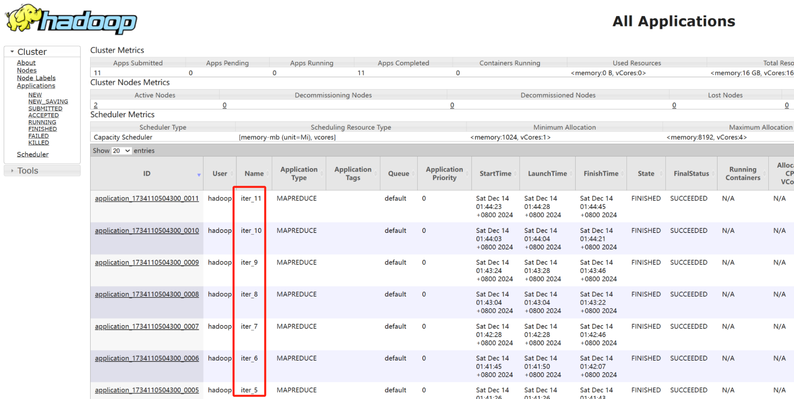

Hadoop（官网）
1、简介
Hadoop 是一个开源的分布式计算框架，用于处理大量的数据集。它是由 Apache 软件基金会维护，旨在通过简单的编程模型将大量数据分布到不同的计算机节点上，从而实现数据的分布式存储和计算。
2、Hadoop的核心概念
（1）HDFS（Hadoop Distributed File System）
- HDFS 是 Hadoop 的分布式存储系统，用于存储大数据。
- 块：HDFS将文件切分成多个块（block），并将这些块分布到集群中的不同节点上。每个块的默认大小通常是 128MB 或 256MB，可以通过配置文件调整
- NameNode（主节点）：是 HDFS 的核心组件之一，负责管理文件系统的元数据（metadata）。元数据包括文件和块之间的映射关系、每个块的副本位置、目录结构等信息。
- DataNode（数据节点）：DataNode 是 HDFS 中的数据存储节点，负责存储实际的文件数据块。每个 DataNode 存储文件的多个块，并周期性地向 NameNode 报告存储的块的健康状态。
- 副本（Replication）：为了保证数据的高可用性，HDFS 会在集群中的多个节点上存储同一个数据块的副本。默认情况下，每个块会存储 3 个副本（可以通过配置修改）。
（2）MapReduce
- MapReduce 是 Hadoop 的核心计算模型，用于处理大规模数据集。它分为两个阶段：
- Map 阶段：输入数据被拆分成多个片段，并并行地处理每个数据片段，生成中间结果。
- Reduce 阶段：将来自 Map 阶段的结果进行合并，得到最终输出
（3）YARN（Yet Another Resource Negotiator）
- YARN 是 Hadoop 的资源管理层，负责管理集群中的资源（CPU、内存等）并调度任务执行。它提供了一个统一的资源管理框架，支持 MapReduce、Spark 等多种计算框架在同一集群上运行。
- 资源管理器（ResourceManager, RM）：负责全局的资源管理和任务调度
- 节点管理器（NodeManager, NM）：负责管理每个集群节点上的资源和任务执行。
- 应用程序管理器（ApplicationMaster, AM）：ApplicationMaster 是每个应用程序（作业）对应的一个实例，负责管理应用程序的生命周期
- 容器（Container）：是 YARN 中资源分配的基本单位，它封装了一个作业的资源需求（如 CPU、内存等）以及运行作业的环境（如环境变量、JAR 文件等）
3、使用minikube部署Hadoop
（1）制作并向minikube中导入所需的镜像
- 我们可以使用dockerfile来制作所需镜像
docker build -f dockerfile_hadoop -t spark-hadoop-numpy:latest .
- 如果出现拉取错误的问题，也可以选择直接导入实验所提供的打包好的镜像
docker load -i spark-hadoop-numpy.tar
- 然后向minikube中导入所需的镜像
minikube image load spark-hadoop-numpy:latest- 进入minikube查看是否导入
minikube ssh
docker images（2）使用hadoop-cluster.yaml文件部署Hadoop，并查看pod状态验证其是否正常运行
kubectl apply -f hadoop-cluster.yaml
kubectl get pods（3）HDFS的使用
- 查看自己创建hadoop集群的pod名称，进入任意一个pod，这里进入namenode，同样，这里的 namenode-764bfd689f-zkknj 需替换为自己创建时自动生成的namenode名称
kubectl get pods
kubectl exec -it namenode-764bfd689f-zkknj -- bash- 列出hdfs根目录下的文件目录，此时根目录下没有东西
hdfs dfs -ls /- 在根目录下创建文件夹newland
hdfs dfs -mkdir /newland- 再次查看根目录下的文件目录，发现有了newland
hdfs dfs -ls /- 在本地创建一个test.txt文件
echo "hello hdfs" > test.txt- 将这个test.txt文件上传到/newland下
hdfs dfs -put test.txt /newland- 查看newland下的文件目录，发现有了test.txt文件
hdfs dfs -ls /newland- 查看文件内容，即为hello hdfs
hdfs dfs -cat /newland/test.txt- 下载hdfs上的文件test.txt到本地，并重命名为test_downland.txt
hdfs dfs -get /newland/test.txt /opt/spark/work-dir/test_downland.txt- 查看本地目录，发现刚刚所下载的test_downland.txt文件
ls
cat test_downland.txt- 最后删除hdfs上的文件夹newland
hdfs dfs -rm -r /newland- 再次查看根目录，发现已经没有文件目录了
hdfs dfs -ls /- 而后我们退出该容器，回到命令行中
exit（4）设置端口转发以访问Hadoop的webui
- 设置转发以查看resourcemanager的webui：
kubectl port-forward svc/resourcemanager 8088:8088
- 使用kubectl的本地端口转发功能来查看namenode的webui。这个转发命令行界面需要一直保持转发状态，停止转发后就无法访问webui了：
kubectl port-forward svc/namenode 9870:9870
- 通过下面的url在浏览器访问：

（5）运行Hadoop的示例程序wordcount
- wordcount 示例程序是一个经典的示例，通常用于展示如何使用 Hadoop 进行分布式计算，它通过 MapReduce 模型统计输入文件中每个单词出现的次数。
- Mapper：负责读取输入数据，将数据转换为键值对。
- Reducer：负责将相同键的值进行汇总，,统计单词的出现次数。
- 进入namenode的命令行bash，下面的namenode-78587cfc8f-clmkd需要替换为自己的pod名称，可以通过kubectl get pods来查看name的pod名称
kubectl exec -it namenode-78587cfc8f-clmkd -- bash
- 创建input.txt文件，作为wordcount程序的输入
echo -e "Hello Hadoop\nHello Kubernetes" > input.txt
- 在hdfs上创建目录/input
hdfs dfs -mkdir -p /input
- 上传input.txt文件到HDFS
hdfs dfs -put input.txt /input/
- 运行wordcount程序
hadoop jar /opt/hadoop/share/hadoop/mapreduce/hadoop-mapreduce-examples-3.3.6.jar wordcount /input/input.txt /output
（6）运行k-means算法的mapreduce版本
- 将所需的文件与jar包传入namenode，下面命令中的namenode-78587cfc8f-sl48f请替换为自己的namenode所在的pod名称
- 传入需要处理的数据文件data.txt、应用程序的jar包k-means-1.0-SNAPSHOT.jar、环境配置文件config.xml
kubectl cp data.txt namenode-78587cfc8f-sl48f:/opt/hadoop/
kubectl cp k-means-1.0-SNAPSHOT.jar namenode-78587cfc8f-sl48f:/opt/hadoop/
kubectl cp config.xml namenode-78587cfc8f-sl48f:/opt/hadoop/
- 进入namenode的命令行bash，同样的，下面命令中的namenode-78587cfc8f-sl48f请替换为自己的namenode所在的pod名称
kubectl exec -it namenode-78587cfc8f-sl48f -- bash
- 进入传入文件所在的文件夹（这一步不要忘记，不然找不到文件）
cd /opt/hadoop/
- 上传所需文件到HDFS
hadoop fs -put k-means-1.0-SNAPSHOT.jar /input
hadoop fs -put config.xml /input
hadoop fs -put data.txt /input
- 运行程序
hadoop jar /opt/hadoop/k-means-1.0-SNAPSHOT.jar it.unipi.hadoop.KMeans /input/data.txt /output
注意：HDFS上不能有/output路径存在，如果有的话，使用下面的命令删去
hadoop fs -rm -r /output


- 从HDFS上下载并查看结果文件
hadoop fs -get /user/Hadoop/output/centroids.txt
cat centroids.txt
注意，每次k-means算法的结果不一定一样，迭代次数也未必相同，能正常运行即可